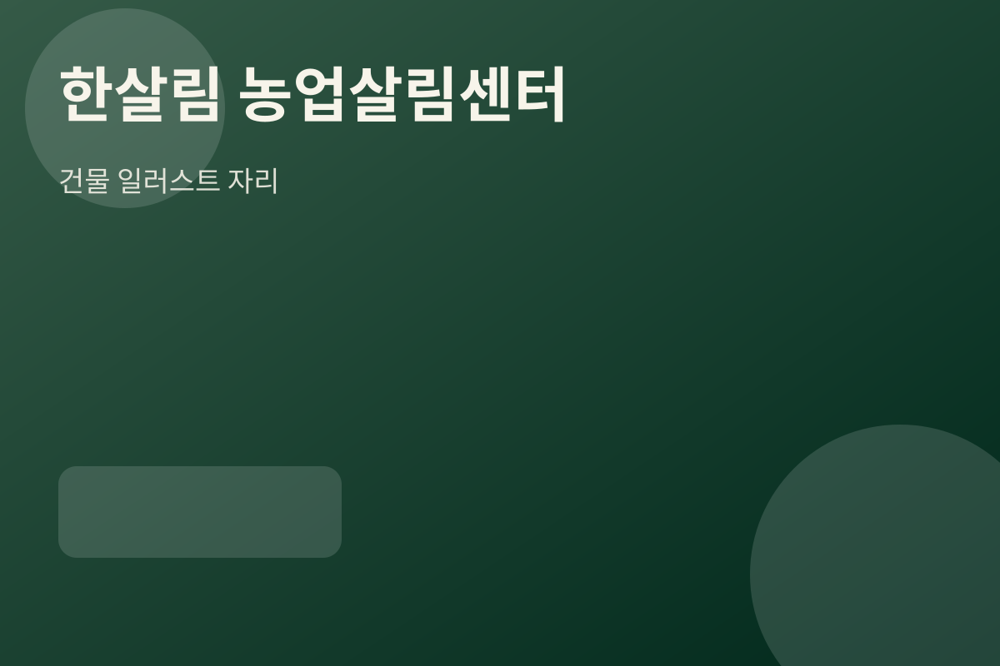

교육, 회의, 숙박, 식음이 한 공간 안에서 유기적으로 연결되는 복합 공간입니다. 방문 목적에 따라 필요한 층을 쉽게 확인할 수 있도록 층별 기능을 한눈에 정리했습니다.
주차 60면
연수원 최대 26명
중·대회의실 운영
카페·식당 이용 가능

핵심 공간
회의 · 숙박 · 식음이 한곳에
숙박, 회의, 식음, 휴식 기능이 한 공간에 모여 있어 행사의 동선이 효율적입니다.
운영 장점
연속 프로그램 운영에 적합
소규모 실무회의부터 중대형 교육 프로그램까지 연속적으로 운영할 수 있어 방문자와 운영자 모두에게 편리한 환경을 제공합니다.
이용 포인트
숙박, 회의, 식음, 휴식 기능이 한 공간에 모여 있어 행사의 동선이 효율적입니다. 소규모 실무회의부터 중대형 교육 프로그램까지 연속적으로 운영할 수 있어 방문자와 운영자 모두에게 편리한 환경을 제공합니다.
예약 및 이용 문의
자세한 이용 안내와 예약은 한살림 농업살림센터 홈페이지에서 확인하실 수 있습니다.